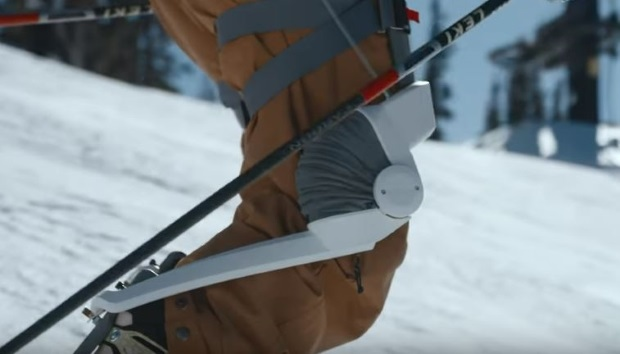

Yamaha parie sur un robot wearable pour les skieurs

Le produit phare de Roam, Elevate, s'adresse aux 16 millions d'Américains qui pratiquent les sports d'hiver. Et sans nul doute bientôt aux skieurs du monde entier.
L'appareil se compose de deux bretelles attachées aux cuisses de l'utilisateur et reliées à ses chaussures de ski ou de snowboard. Elevate ne pèse que quelques grammes et soulage les jambes, ce qui permet aux skieurs de rester plus longtemps en piste, et de repousser leurs limites physiques sur les planches.
Cibler le secteur du sport d'hiver est une bonne idée pour les spécialistes de la robotique. Car sur le marché grand public, il faut désormais exploiter de la niche. Surtout que les skieurs et les snowboarders dépensent beaucoup d'argent pour l'équipement. Et surtout que la menace de blessures aux genoux et au dos qui mettent fin à leur saison est est bien comprise par les amateurs de poudreuse.
"Roam existe pour changer les limites de la mobilité humaine" explique Tim Swift, fondateur et directeur général de Roam. "Cette frontière est différente pour chaque personne, mais elle existe pour tous. Que vous soyez un olympien, un athlète de tous les jours ou que vous cherchiez à retrouver une mobilité perdue, nous voulons vous propulser au-delà de ce que votre corps rend possible actuellement."
Tim Swift est un ancien élève d'Ekso Bionics, l'une des premières entreprises à commercialiser une technologie robotique portable pour améliorer la mobilité. Mais Ekso a lutté pour trouver un marché viable, oscillant entre les applications militaires, la mobilité, le médical, et plus récemment les applications industrielles.
Sans doute inspiré par son point de vue d'ingénieur senior chez Ekso, l'entreprise de Tim Swift a décidé de maintenir une orientation de marché de niche pour son premier produit commercialisé.
Yamaha Motor, d'autre part, qui a pour objectif de se concentrer sur les produits de mobilité, envisage probablement des applications futures avec le portefeuille technologique de Roam.
"Roam crée une nouvelle catégorie de produits passionnants qui améliorent les capacités humaines" a déclaré Amish Parashar, associé chez Yamaha Motor Ventures. "En rendant ces exosquelettes robotiques abordables, évolutifs et puissants, Roam a éliminé les principaux obstacles à leur adoption généralisée. Nous pensons que ces produits seront un jour couramment utilisés pour créer de nouvelles expériences palpitantes et favoriser la mobilité humaine."
Elevate coûtera environ 2.500$. Et le produit sera en démonstration cet hiver dans des stations de sport d'hiver des Etats-Unis (Tahoe et Park City).